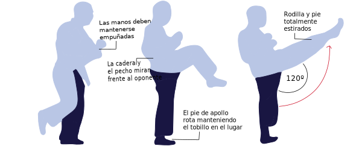
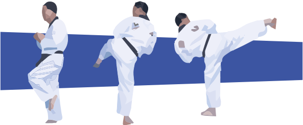
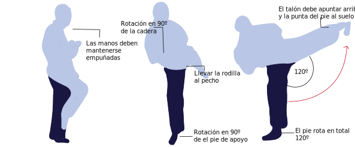
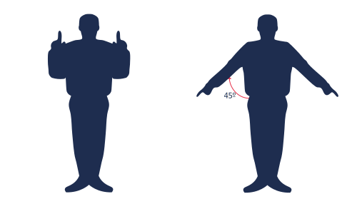
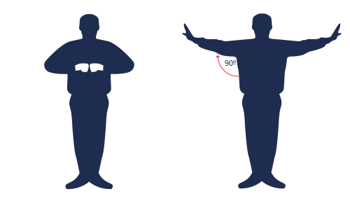
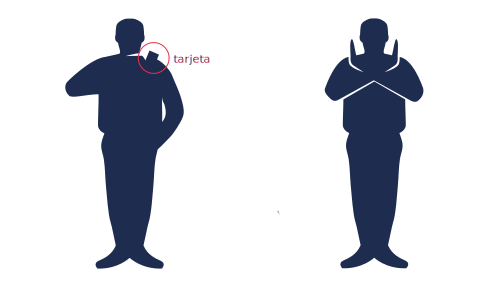

El taekwondo (태권도; Tae-Kwon-Do, lit. patada-puño-camino) es una forma de arte marcial coreano que persigue un estilo de vida y, además, métodos de ocupar el cuerpo como defensa personal. Este deporte es considerado olímpico de exhibición desde el año 1988 en los Juegos Olímpicos de Seúl (Corea del sur). En el año 1994 comenzó a ser considerado deporte olímpico de competición, para hacerse parte oficial de este evento en Sydney, en el año 2000.
En su origen, esta forma de arte marcial se debe a Choi Hong-Hi (1918-2002), General del Ejército Surcoreano que fusiona el Karate, de origen japonés, y el Taekkyon, de origen coreano y un aspecto similar a una danza, circular, continuo y fluido.
El atuendo
Tal como en el karate, en taekwondo se usan cinturones para indicar el avance de cada aprendiz, habiendo 6 colores que representan diferentes grados:
- Blanco: la inocencia de quién recién comienza
- Amarrillo: relacionado a la planta que comienza a tener raíces
- Verde: una planta que ya ha madurado
- Azul: el cielo que apunta a una planta más grande
- Rojo: peligro ante los actos que se comenten
- Negro: lo ha incorporado todo, como una planta madura
Por otro lado, los cinturones al igual que los cursos son reconocidos por un grado (o número) que lo representa. Estos nuúmeros van desde el más grande, en este caso el 10º GUP hasta el 1º GUP, pero una vez que se llega a la cinta negra estos comienzan a llamarse DAN y van desde el 1º DAN hasta el 10º DAN.
Diferenciándose del karate, la vestimenta no se conoce como keikogi (稽古着, keigo-gi, lit. práctica-ropa). La vestimenta en el taekwondo recibe el nombre de dobok (도복), que junta el do (도), que puede traducirse como «camino» o «senda de la vida», y el bok (복), que significa «ropa». La vestimenta, más allá de la práctica, implica una senda de vida.
Además, en la práctica del taekwondo es necesario contar con una serie de protecciones corporales para evitar o evitarse daños físicos:
El combate
Un combate de taekwondo consiste en el enfrentamiento de dos competidores identificados con colores: Chung (azul) v/s Hong (rojo).
Antes de cada enfretamiento, los dos competidores son llamados a revisión de sus protecciones corporales, para así evitar cualquier tipo de daño.
El combate tiene una duración base de 3 rounds. Cada round dura 2 minutos y se deja 1 minuto de descanso. En total, son 8 minutos.
Movimientos básicos en el combate
El taekwondo se reconoce por la patada, CHAGUI en coreano, toda vez que ésta ofrece un mayor alcance entre los dos ágiles competidores. Las técnicas diferentes de Chagui se clasifican por movimientos distintos de la pierna y el pie.
AP CHAGUI (PATADA FRONTAL)
DOLIO CHAGUI (PATADA LATERAL)
YOP CHAGUI (PATADA LATERAL)
La cancha
Chung (azul) y Hong (rojo) se enfrentan en una cancha que, también, es azul y roja. En torno a estos dos contricantes se ubican varias personas con roles bien definidos.
Señas básicas del Árbitro
El árbitro debe presentar una serie de indicaciones por medio de lengua de señas.
INICIO
FINAL
RECHAZAR IVR
Resultados Taekwondo Juegos Panamericanos 2019
Dado los resultados de los combates de los últimos juegos panamericanos (Perú 2019) los países que más destacaron fueron:
Ilusiones chilenas en los panamericanos
Ignacio Morales
Con 27 años y siendo estudiante de la Universidad Andrés Bello, Ignacio es actualmente campeón nacional de Taekwondo. Este 2023 consiguió uno de sus más grandes logros, tras coronarse como el mejor del mundo al obtener el primer lugar en el Canadá Open Taekwondo 2023, en la categoría de Kyorugi sénior. Actualmente posee: 3 medallas de oro, 3 de plata y 4 de bronce, esto entre competencias internacionales y clasificatorias.
Fernanda Aguirre
La viñamarina “Feña” de 25 años es la representante chilena del taekwondo. Ella es medallista de bronce de Lima 2019 y clasificó a los Juegos Olímpicos de Tokio 2020. Desafortunadamente, no pudo participar en los juegos de Tokio debido a un contagio de Covid-19. Sus próximas competencias son el mundial en Azerbaiyán, el Grand Prix en Roma y por supuesto los Juegos Panamericanos de Santiago 2023.